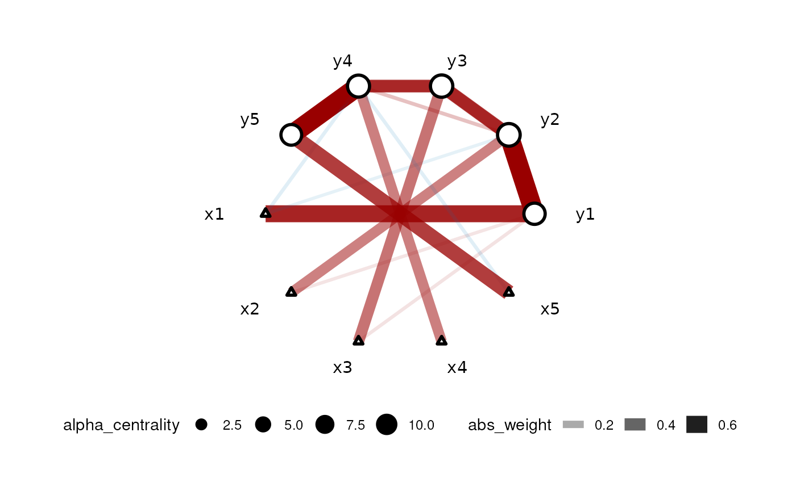
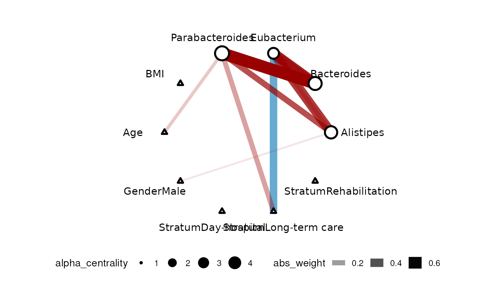
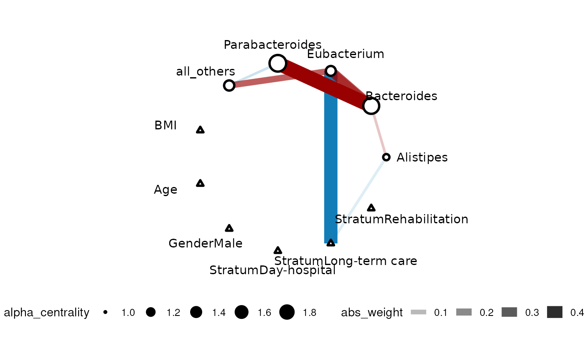

CARlasso is the main interface to work with the model, for details see the reference.
This is the case when data is Gaussian or can be transformed to Gaussian, for example, (log) biomass of trees. We will provide an example with simulated data. The use of the Carlasso is similar to lm, we could supply a formula and a dataframe with both responses and predictors.
First, we simulate data under a 5-node AR1 model:
set.seed(42)
dt <- simu_AR1(n=100,k=5, rho=0.7)
head(dt)
#> y1 y2 y3 y4 y5 x1 x2
#> 1 1.2705558 0.94046103 -0.9356549 -0.5202384 -0.1928792 1.3709584 1.2009654
#> 2 0.6027324 0.06671259 0.9096216 1.3740787 0.9584424 -0.5646982 1.0447511
#> 3 -0.1139447 -1.61460997 -0.1140354 -0.8013874 0.4673093 0.3631284 -1.0032086
#> 4 0.5912523 2.13482891 2.2626483 1.8791249 2.3825324 0.6328626 1.8484819
#> 5 -2.1837420 -3.68267385 -2.3069358 -3.6243897 -2.2644276 0.4042683 -0.6667734
#> 6 -2.2367855 -1.92498967 -3.2242525 -1.5495283 -1.4191343 -0.1061245 0.1055138
#> x3 x4 x5
#> 1 -2.0009292 -0.004620768 1.33491259
#> 2 0.3337772 0.760242168 -0.86927176
#> 3 1.1713251 0.038990913 0.05548695
#> 4 2.0595392 0.735072142 0.04906691
#> 5 -1.3768616 -0.146472627 -0.57835573
#> 6 -1.1508556 -0.057887335 -0.99873866To use the Normal version, we should set link="identity" which is the default. In this case, we are setting adaptive=TRUE to use the adaptive version of CAR-LASSO (for more details, see the paper):
car_res <- CARlasso(y1+y2+y3+y4+y5~x1+x2+x3+x4+x5, data = dt, adaptive = TRUE)
#> Predictors will be centered.
#>
#> Algorithm set to be adapive. Assuming all hyper parameters are the same for beta
#>
#> Algorithm set to be adapive. Assuming all hyper parameters are the same for Omega's off diagonal entries
#>
#> Algorithm set to be adaptive. Assuming priors are all the same for Omega's diagonals
#>
#> Algorithm start...
#>
#> progress:
#>
#>
#> done
plot(car_res,tol = 0.05)
The color of the edge represents the type of correlation (negative=blue, positive=red) and the width of the edge corresponds to the effect size. Response nodes are represented by circles and predictor nodes are represented by triangles.
We can have a more formal horseshoe inference on the structure of the network which will update the car_res object:
This is common in the case of microbe-related studies and some ecological applications with relative abundances. For instance, microbe relative abundance come from sequencing and in this case, the sum of “abundance” is determined by the sequence depth rather than the real total abundance. The data is usually described as “compositional”. In CARlasso, this type of data are modeled as Logit-Normal-multinomial. In this case, we need to have a “reference level” taxa and all others are “relative” to this taxa.
First, we take a look at the data which is still a dataframe with all predictors and responses
mgp154[1:5,1:7]
#> id Alistipes Bacteroides Barnesiella Blautia Butyrivibrio Caloramator
#> 1 EM245 42 2101 0 334 61 156
#> 2 EM109 2910 6080 40 597 178 175
#> 3 EM248 2850 5392 0 327 46 87
#> 4 EM274 1559 7210 43 1206 50 428
#> 5 EM330 1916 5067 0 1827 64 5847To run the composition model, we need to set link="logit"
gut_res <- CARlasso(Alistipes+Bacteroides+
Eubacterium+Parabacteroides+all_others~
BMI+Age+Gender+Stratum,
data = mgp154,link = "logit",
adaptive = TRUE, n_iter = 2000,
n_burn_in = 1000, thin_by = 2)
#> Predictors will be centered.
#>
#> Algorithm set to be adapive. Assuming all hyper parameters are the same for beta
#>
#> Algorithm set to be adapive. Assuming all hyper parameters are the same for Omega's off diagonal entries
#>
#> Algorithm set to be adaptive. Assuming priors are all the same for Omega's diagonals
#>
#> Last response will be used as reference group
#>
#> Algorithm start...
#>
#> progress:
#>
#>
#> doneNote that in this case all_others (an existing column in our data), i.e. the last one in the left hand side of the formula will be the reference level.
We can update the network inference by a horseshoe method to determine when edges will be considered non-existent. More details can be found in the paper.
# horseshoe will take a while, as it needs to sample the latent normal too
gut_res <- horseshoe(gut_res)
plot(gut_res)
This is common in a lot of ecological applications. For instance, number of seedlings within a site. The responses are counts rather than continuous. In CARlasso, it is modeled as Poisson with log-Normal rate.
We will use the same compositional data as before to illustrate the counts model. However, it is important to note that relative abundances should not be considered as counts. To distinguish between compositional and count data, one can ask the question: is the sum decided by us? If yes, we want to use compositional models.
To run the count model, we need to set link="log":
gut_res <- CARlasso(Alistipes+Bacteroides+
Eubacterium+Parabacteroides+all_others~
BMI+Age+Gender+Stratum,
data = mgp154,link = "log",
adaptive = TRUE,
r_beta = 0.1, # default sometimes cause singularity in Poisson model due to exponential transformation, slightly change can fix it.
n_iter = 2000,
n_burn_in = 1000, thin_by = 2)
#> Predictors will be centered.
#>
#> Algorithm set to be adapive. Assuming all hyper parameters are the same for beta
#>
#> Algorithm set to be adapive. Assuming all hyper parameters are the same for Omega's off diagonal entries
#>
#> Algorithm set to be adaptive. Assuming priors are all the same for Omega's diagonals
#>
#> Algorithm start...
#>
#> progress:
#>
#>
#> done
# horseshoe will take a while, as it's currently implemented in R rather than C++
gut_res <- horseshoe(gut_res)
plot(gut_res)